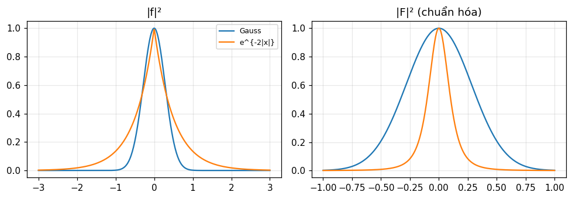
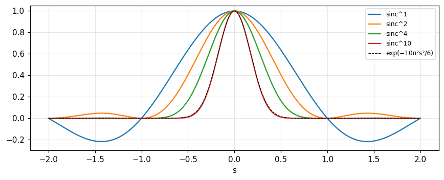

Diện tích, mômen, tâm khối, phương sai, độ trơn, độ rộng tương đương, hệ thức bất định, sai phân, trung bình trượt và định lý giới hạn trung tâm: mỗi tính chất ở một miền ứng với một tính chất ở miền kia.
Nêu và dùng các cặp tính chất: diện tích và tung độ giữa, mômen bậc n và đạo hàm bậc n tại gốc, tâm khối, phương sai.
Liên hệ độ trơn của hàm với tốc độ tắt dần của biến đổi (độ dốc trên đồ thị log-log, decibel trên octave).
Tính độ rộng tương đương, độ rộng tự tương quan, độ rộng bình phương trung bình và hiểu hệ thức bất định.
Dùng sai phân hữu hạn, trung bình trượt, và giải thích định lý giới hạn trung tâm bằng biến đổi.
Dùng các bất đẳng thức: cận trên của tung độ, độ dốc, và Schwarz.
Dùng nút, chấm tròn hoặc phím ← → để chuyển slide.
PHẦN 1/5
01
Diện tích, mômen và tâm khối
Bối cảnh: Hàm và biến đổi của nó như hai miền, "trên" và "dưới", mỗi hàm có một "cái bóng" ở miền kia.
Vướng mắc: Ta cần biết một đặc điểm của hàm mà không muốn đảo phép biến đổi và tích phân đầy đủ.
Giải pháp: Diện tích bằng tung độ giữa của biến đổi; mômen bậc n tỉ lệ với đạo hàm bậc n của biến đổi tại gốc.
Diện tích và tung độ giữa
Mômen bậc một và tâm khối
Mômen quán tính và mômen bậc n
1/5 · Diện tích, mômen và tâm khối
Hai miền
Có thể nghĩ hàm và biến đổi của nó ở hai miền, gọi là miền trên và miền dưới, như hàm đi lại ở mặt đất còn biến đổi ở thế giới ngầm (Doetsch, 1943). Mỗi hàm có một "bóng" ở miền kia, gắn duy nhất với nó qua biến đổi Fourier và đổi khi hàm đổi. Trong các hình, hàm để bên trái, biến đổi bên phải (Bracewell, tr. 151).
1/5 · Diện tích, mômen và tâm khối
Các định lý là cặp phép toán
Các định lý trước có thể xem là danh sách cặp phép toán đồng thời, một ở miền hàm, một ở miền biến đổi. Nén trục hoành ở miền hàm là giãn trục hoành cộng co tung độ ở miền biến đổi; dịch ở miền hàm là xoắn ở miền biến đổi; tích chập ở miền hàm là nhân ở miền biến đổi. Ta cũng cần các cặp tính chất: diện tích dưới hàm và tung độ giữa của biến đổi là một cặp (tr. 151 đến 152). Mục đích: khi chỉ cần đặc điểm của hàm, nhảy sang miền kia và đọc thẳng đáp số.
1/5 · Diện tích, mômen và tâm khối
Tích phân xác định
Tích phân xác định của hàm từ -\infty tới \infty bằng giá trị biến đổi tại gốc, vì F(0)=\int f(x)e^{0}dx (tr. 152). Do đối xứng, diện tích dưới biến đổi bằng f(0). Số đo với f=e^{-x}H(x): diện tích 1 bằng F(0) = 1, và diện tích dưới F bằng 0.5, giá trị trung bình của f ở hai phía chỗ nhảy tại 0.
Phép toán nào trên f(x) giữ nguyên diện tích, chẳng hạn dịch, đều giữ nguyên tung độ giữa của biến đổi; với dịch điều này khớp định lý dịch, vì e^{-i2\pi as}F(s) tại s=0 bằng F(0). Ví dụ khó hơn: tách f tại x=0 thành hai nửa rồi đẩy xa nhau 2a, tức f(x-a)H(x-a)+f(x+a)H(-x-a). Diện tích không đổi nên tung độ giữa của biến đổi không đổi; vì tung độ giữa của hàm bây giờ bằng 0 nên diện tích của biến đổi phải bằng 0 (tr. 152). Số đo với f=e^{-|x|}, a=0.5: diện tích 2, và diện tích của biến đổi 0.
1/5 · Diện tích, mômen và tâm khối
Mômen bậc một
Theo tương tự khối lượng dọc theo một đường, mômen bậc một quanh gốc là \int xf(x)dx. Định lý: mômen bậc một bằng -(2\pi i)^{-1} lần độ dốc của F(s) tại s=0 (tr. 153 đến 154). Suy ra từ định lý đạo hàm: \int(-i2\pi x)f(x)e^{-i2\pi xs}dx=F'(s). Số đo với f=e^{-x}H(x): \int xf= 1, và F'(0)/(-2\pi i) = 1.
Hàm có mômen bậc một bằng 0 có biến đổi độ dốc 0 tại gốc, và ngược lại. Hơn nữa, nếu một hàm có độ dốc 0 tại gốc và không bằng 0 ở đó thì biến đổi của nó có tâm khối tại gốc (tr. 155). Số đo: Gauss chẵn có mômen bậc một 0 và biến đổi có độ dốc 0 tại gốc.
1/5 · Diện tích, mômen và tâm khối
Tâm khối
Tâm khối \langle x\rangle là điểm mà diện tích nhân \langle x\rangle bằng mômen bậc một; nó nói hàm chủ yếu tập trung ở đâu, hoặc "thời điểm" của một xung tín hiệu (tr. 155). Theo các mục trước, \langle x\rangle=F'(0)/(-2\pi iF(0)): hoành độ tâm khối bằng độ dốc giữa chia tung độ giữa của biến đổi, nhân -(2\pi i)^{-1}. Nếu diện tích bằng 0 thì \langle x\rangle trở thành vô hạn (tr. 156). Số đo với f=xe^{-x}H(x) (bảng 8.4): F=(1+i2\pi s)^{-2}, tâm khối 2 theo tích phân và 2 theo F'(0)/(-2\pi iF(0)).
Mômen bậc hai \int x^2f\,dx bằng (4\pi^2)^{-1} lần độ cong hướng xuống của biến đổi tại gốc: \int x^2f\,dx=-F''(0)/4\pi^2 (tr. 156 đến 157). Hàm có mômen bậc hai cao có biến đổi cong nhiều tại gốc; vì có thừa số x^2, mômen nhạy với f ở x lớn, và điều xảy ra ở x lớn phản ánh vào hành vi của biến đổi tại gốc s. Nếu mômen bậc hai vô hạn thì độ dốc của biến đổi nhảy đột ngột ở gốc (hình 8.5). Số đo với f=xe^{-x}H(x): \int x^2f= 6, và -F''(0)/4\pi^2 = 6.
Mômen bậc n bằng (-2\pi i)^{-n} lần đạo hàm bậc n của F tại gốc, miễn là mômen tồn tại (tr. 157). Nếu f tắt như |x|^{-m} ở x lớn thì chỉ có khoảng [m]-1 mômen đầu tồn tại, và biến đổi có gián đoạn bậc cao ở gốc; nếu bậc M đạo hàm của F là xung thì mômen bậc M vô hạn (tr. 158). Số đo với f=e^{-x}H(x), n!: mômen bậc 2, 3, 4 bằng 2, 6, 24 theo tích phân và theo đạo hàm của F (tích phân đường quanh gốc).
Vì sao đẩy hai nửa của f ra xa nhau làm diện tích biến đổi bằng 0?
Khi nào tâm khối không xác định?
Vì sao mômen bậc hai nhạy với hành vi của f ở x lớn?
Gợi ý: vì tung độ giữa của hàm bằng 0; khi diện tích bằng 0; do thừa số x^2.
PHẦN 2/5
02
Bình phương trung bình, phương sai và độ trơn
Bối cảnh: Trong thống kê, phương sai là độ trải; trong cơ học, bán kính quán tính.
Vướng mắc: Tích chập làm hàm rộng ra và trơn hơn, nhưng "rộng hơn" và "trơn hơn" nghĩa là gì và đo ra sao?
Giải pháp: Phương sai và mômen cộng lại dưới tích chập; độ trơn (bậc đạo hàm còn là xung) cũng cộng lại; độ trơn quyết định độ dốc tắt dần của phổ.
Bình phương trung bình và phương sai
Cộng dưới tích chập
Độ trơn và tốc độ tắt dần
2/5 · Bình phương trung bình, phương sai và độ trơn
Hoành độ bình phương trung bình
\langle x^2\rangle là giá trị trung bình của x^2 với trọng số f(x), và theo kết quả trước \langle x^2\rangle=\dfrac{-F''(0)}{4\pi^2F(0)} (tr. 158). Trong cơ học, \langle x^2\rangle là bình phương bán kính quán tính của một thanh có mật độ f; trong thống kê, với hàm phân bố tần số, nó là khái niệm quan trọng và (F) là "hàm đặc trưng" (tr. 158). Với f=xe^{-x}H(x) giá trị là 6 (bảng 8.4).
2/5 · Bình phương trung bình, phương sai và độ trơn
Cộng dưới tích chập
Hoành độ bình phương trung bình của f*g bằng tổng của f và g nếu tâm khối của f (hoặc g) nằm ở gốc. Đây là biểu thức định lượng của hiệu ứng làm nhòe của tích chập. Suy ra: (FG)''=F''G+2F'G'+FG'', nên tổng quát (tr. 158 đến 159):
Số đo với f=xe^{-x}H (tâm khối 2, \langle x^2\rangle=6) và g=e^{-x}H (tâm khối 1, \langle x^2\rangle=2): \langle x^2\rangle_{f*g} = 11.994 bằng 6+2+2\cdot2\cdot1; tích chập đo trên lưới cho cùng số.
2/5 · Bình phương trung bình, phương sai và độ trơn
Trục dịch: định lý song song
Lấy g(x)=\delta(x-a), có \langle x^2\rangle_g=a^2; ta được định lý quen thuộc về mômen quán tính quanh trục không qua tâm khối: nếu gốc của f ở tâm khối thì \langle x^2\rangle_{f*\delta_a}=\langle x^2\rangle_f+a^2 (tr. 159). Số đo với tam giác \Lambda (\langle x^2\rangle=1/6) dịch a=2: 4.1667 =1/6+4.
2/5 · Bình phương trung bình, phương sai và độ trơn
Bán kính quán tính và phương sai
Bán kính quán tính là căn bậc hai của hoành độ bình phương trung bình, tiện vì có cùng thứ nguyên với x, dù các tính chất (cộng, độ cong) đơn giản hơn khi viết theo \langle x^2\rangle (tr. 159). Phương sai \sigma^2=\langle(x-\langle x\rangle)^2\rangle=\langle x^2\rangle-\langle x\rangle^2 là độ lệch bình phương trung bình quanh tâm khối; nó bằng \langle x^2\rangle khi chọn gốc ở tâm khối. Phương sai của f*g bằng tổng phương sai (tr. 160). Số đo với f=xe^{-x}H và \Lambda: \sigma_f^2 = 2, \sigma_\Lambda^2 = 0.1667, và phương sai tích chập 2.1667.
2/5 · Bình phương trung bình, phương sai và độ trơn
Độ trơn và độ nén của biến đổi
Hàm càng trơn (càng nhiều đạo hàm liên tục) thì biến đổi càng gọn, tức tắt dần nhanh theo s. Nếu hàm và n-1 đạo hàm đầu liên tục thì biến đổi tắt ít nhất như |s|^{-(n+1)}; nói gọn: nếu đạo hàm bậc k trở thành xung thì biến đổi cư xử như |s|^{-k} ở vô cực (tr. 160 đến 161). Vì thế \text{sinc}^2x tắt nhanh hơn \text{sinc}\,x nhiều, gắn với biến đổi \Lambda trơn hơn \Pi (hình 8.6).
2/5 · Bình phương trung bình, phương sai và độ trơn
Thử số: độ dốc log-log
Đo bằng tích phân số tại các điểm nửa nguyên s=10.5 và 20.5: hàm chữ nhật (bản thân nhảy) cho độ dốc -1; tam giác (đạo hàm bậc một nhảy, đạo hàm bậc hai là xung) cho -2; xung parabol từng khúc \Pi*\Pi*\Pi (đạo hàm bậc ba là xung) cho -3. Mỗi lần thêm một tích chập với \Pi làm độ dốc giảm thêm một đơn vị.
Hình 1. Đường bao |sinc|ᵏ trên đồ thị log-log là các đường thẳng độ dốc −1, −2, −3 khi hàm gốc lần lượt là Π (nhảy), Λ (góc), Π*Π*Π (đạo hàm bậc ba là xung).
2/5 · Bình phương trung bình, phương sai và độ trơn
Decibel trên octave
Hàm có góc nhưng không nhảy (đạo hàm gián đoạn) có biến đổi tắt như s^{-2} và phổ công suất như s^{-4}; theo ngôn ngữ mạch điện đó là suy giảm 12 dB mỗi octave, hay 40 dB mỗi decade (tr. 163). Trên đồ thị log-log, hàm s^{-2} là đường thẳng độ dốc -2; các đơn vị logarit (octave, decade, decibel, neper) cho phép nói độ dốc, vốn không thứ nguyên, bằng đơn vị dễ hiểu. Số đo: 20\log_{10}2\times2 = 12 dB mỗi octave, và 40 dB mỗi decade cho s^{-2}.
2/5 · Bình phương trung bình, phương sai và độ trơn
Gián đoạn trung gian và độ trơn dưới tích chập
Có những gián đoạn có độ nghiêm trọng nằm giữa nhảy và góc: góc mà hàm đổi độ dốc từ ngang sang dọc xếp giữa góc thường và nhảy thường (bảng 8.2, tr. 164 đến 165). \delta(x) và x^{-1} có cùng loại vô cực tại 0, và gián đoạn vô hạn yếu nhất \log x tương đương một bước nhảy. Về tích chập: nếu f có độ trơn bậc m và g bậc n thì f*g có độ trơn bậc m+n, vì F\sim s^{-m}, G\sim s^{-n}, FG\sim s^{-(m+n)} (tr. 162 đến 163). Độ trơn cộng dưới tích chập cũng như \sigma^2. Nhưng độ trơn đo theo cách này không luôn khớp cảm nhận định tính: \Lambda tích chập với Gauss rất hẹp là trơn vô hạn nhưng chỉ tròn các góc rất nhỏ nên xe chạy vẫn xóc như cũ (tr. 163).
2/5 · Bình phương trung bình, phương sai và độ trơn
Tự kiểm tra phần 2
Phương sai của f*g nếu \sigma_f^2=2 và \sigma_g^2=3?
Biến đổi tắt thế nào nếu đạo hàm bậc ba của hàm là xung?
12 dB mỗi octave tương ứng với lũy thừa nào của s?
Gợi ý: 5; như |s|^{-3}; s^{-2} (biên độ).
PHẦN 3/5
03
Độ rộng tương đương và độ rộng tự tương quan
Bối cảnh: "Rộng" của một hàm có nhiều cách đo, và mỗi cách hợp với một hoàn cảnh vật lý.
Vướng mắc: Hàm càng rộng thì phổ càng hẹp, nhưng có một đại lượng chính xác thể hiện tính nghịch đảo này không?
Giải pháp: Độ rộng tương đương của hàm bằng nghịch đảo độ rộng tương đương của biến đổi; độ rộng tự tương quan ổn định hơn.
Độ rộng tương đương
Định lý nghịch đảo
Độ rộng tự tương quan
3/5 · Độ rộng tương đương và độ rộng tự tương quan
Độ rộng tương đương
Một thước đo tiện của độ rộng là diện tích chia tung độ giữa: W_f=\int f\,dx/f(0). Nói cách khác, đó là bề rộng hình chữ nhật có chiều cao bằng tung độ giữa và cùng diện tích với hàm (hình 8.8, tr. 164 đến 165). Trong quang phổ học, độ rộng tương đương của một vạch là bề rộng của hình chữ nhật có cùng cường độ giữa và cùng diện tích; trong lý thuyết ăng ten, độ rộng chùm hiệu dụng cũng có tính chất này (tr. 165).
Độ rộng tương đương
W_f=\frac{\int f(x)\,dx}{f(0)}=\frac{F(0)}{f(0)}
3/5 · Độ rộng tương đương và độ rộng tự tương quan
Một số ví dụ
Nếu f(0)=0 thì độ rộng tương đương không tồn tại. Số đo (tích phân số): e^{-|x|} có W = 2; Lorentz 1/(1+x^2) có W = 3.1416 (=\pi); \Lambda có 1; Gauss e^{-\pi x^2} có 1 (bảng 8.3).
3/5 · Độ rộng tương đương và độ rộng tự tương quan
Định lý nghịch đảo
Độ rộng tương đương của một hàm bằng nghịch đảo độ rộng tương đương của biến đổi của nó: W_fW_F=1 khi cả hai tồn tại (tr. 167). Định lý gợi định lý tỉ lệ, nhưng định lý tỉ lệ chỉ áp dụng cho hàm cùng dạng; ở đây ta biết đại lượng nào cư xử nghịch đảo và có thể xếp hạng các hàm khác dạng theo đại lượng đó. Chứng minh: W_F=\int F\,ds/F(0)=f(0)/\int f\,dx. Số đo: W_fW_F = 1 cho e^{-|x|} (với W_F = 0.5), và 1 cho Lorentz (với W_F = 0.3183).
Nghịch đảo
W_f\cdot W_F=1
3/5 · Độ rộng tương đương và độ rộng tự tương quan
Giới hạn của độ rộng tương đương
Độ rộng tương đương không phải lúc nào cũng thước đo tốt. Để nói độ rộng băng của bộ lọc hay độ rộng chùm của ăng ten, thường dùng "độ rộng ở nửa công suất", và theo thước đo đó ví dụ thứ hai trong hình 8.9 hẹp hơn, khớp với kinh nghiệm (tr. 167). Có nghịch lý: chuyển động rối cục bộ lan ra ngoài trong không gian trong khi phổ rối lan tới số sóng cao hơn; ở đây độ rộng tương đương là thước đo sai. Góc đặc hiệu dụng của mẫu bức xạ ăng ten, bằng 4\pi chia hướng tính, là độ rộng tương đương tổng quát hóa sang hai chiều (tr. 167).
3/5 · Độ rộng tương đương và độ rộng tự tương quan
Độ rộng tự tương quan
Độ rộng tự tương quan là độ rộng tương đương của hàm tự tương quan: W_{f\star f}=\dfrac{\int f\star f\,dx}{(f\star f)(0)}=\dfrac{|\int f\,dx|^2}{\int|f|^2dx} (tr. 170). Nó không nhất thiết chỉ sự tập trung quanh gốc: hai hàm có cùng tự tương quan (hình 8.10) có cùng độ rộng tự tương quan nhưng khác độ rộng tương đương. Nếu xét xung chữ nhật thì độ rộng tương đương có thể sụp vì dời xung làm tung độ giữa về 0; độ rộng tự tương quan khắc phục điều này vì tự tương quan cực đại tại gốc và không bao giờ bằng 0. Số đo: \Pi dời 3 đơn vị có W_{f\star f} = 1 như khi chưa dời, còn f(0) của nó bằng 0.
3/5 · Độ rộng tương đương và độ rộng tự tương quan
Liên hệ với phổ công suất
Từ tính nghịch đảo, độ rộng tự tương quan của một hàm là nghịch đảo độ rộng tương đương của phổ công suất |F|^2; và nghịch đảo độ rộng tự tương quan của biến đổi là độ rộng tương đương của |f|^2 (tr. 170). Vì thế khái niệm này hỏng khi |F|^2 có tung độ giữa 0, tức khi hàm không có thành phần một chiều, như gói sóng (tr. 170). Số đo với e^{-|x|}: W_{f\star f} = 4, và 1/W_{|F|^2} = 4, cùng kết quả bằng hai cách tính.
3/5 · Độ rộng tương đương và độ rộng tự tương quan
Ưu điểm và giới hạn của độ rộng tự tương quan
Hai hàm có cùng phổ công suất nhưng thành phần phổ trượt tới pha tương đối bất kỳ có cùng tự tương quan. Vậy W_{f\star f} (1) xử lý được việc hàm bị dời khỏi gốc và (2) xử lý được giao thoa pha nội tại làm tung độ giữa nhỏ. Nhưng trong hai hàm cùng phổ công suất, một hàm có thể hẹp, hàm kia rộng: trường nhiễu xạ Fresnel trên các mặt phẳng song song với khẩu độ chiếu sáng có cùng tự tương quan nhưng độ rộng chiếu sáng tăng theo khoảng cách (tr. 171). Trường hợp tiếng ồn trắng qua bộ lọc rồi chỉnh lưu: khoảng cách trung bình giữa các giá trị ra độc lập tỉ lệ nghịch với độ rộng tự tương quan của đặc tính công suất qua băng (tr. 171). Độ rộng tự tương quan cũng bất biến dưới xáo trộn (shuffling).
3/5 · Độ rộng tương đương và độ rộng tự tương quan
Tự kiểm tra phần 3
W_f của e^{-|x|} là bao nhiêu và W_F là bao nhiêu?
Vì sao \Pi(x-3) có độ rộng tự tương quan nhưng không có độ rộng tương đương?
Khi nào độ rộng tự tương quan không xác định?
Gợi ý: 2 và 1/2; vì f(0)=0 còn tự tương quan cực đại ở gốc; khi hàm có diện tích 0.
PHẦN 4/5
04
Độ rộng bình phương trung bình và hệ thức bất định
Bối cảnh: Độ rộng tương đương và tự tương quan đều hỏng với tín hiệu dao động không có thành phần một chiều.
Vướng mắc: Muốn đo thời lượng của gói sóng, ta dùng phương sai của năng lượng |f|^2.
Giải pháp: Tích độ trải theo thời gian và tần số không thể nhỏ hơn 1/4\pi, và Gauss là dạng đạt giá trị tối thiểu.
Độ rộng bình phương trung bình
Bất đẳng thức Schwarz và các cận
Hệ thức bất định
4/5 · Độ rộng bình phương trung bình và hệ thức bất định
Khi các thước đo trước hỏng
Độ rộng tương đương và tập trung vừa nêu không đủ mọi nhu cầu, nên còn các thước đo khác. Giá trị bình phương trung bình \langle x^2\rangle=\int x^2f/\int f là thước đo rộng rãi, cũng như phương sai với hàm không nằm ở gốc: \langle(x-\langle x\rangle)^2\rangle=\langle x^2\rangle-\langle x\rangle^2=\dfrac{-F''(0)}{4\pi^2F(0)}+\dfrac{1}{4\pi^2}\left[\dfrac{F'(0)}{F(0)}\right]^2 (tr. 171). Các thước đo này hỏng khi diện tích của hàm bằng 0 nên không dùng được cho tín hiệu dao động hay gói sóng (tr. 172).
4/5 · Độ rộng bình phương trung bình và hệ thức bất định
Phương sai của mô đun bình phương
Để đối phó, ta nghĩ theo mật độ năng lượng |f|^2: tâm khối và phương sai của phân bố năng lượng, gọi là phương sai của mô đun bình phương (\Delta x)^2=\dfrac{\int(x-\bar x)^2|f|^2dx}{\int|f|^2dx} (tr. 172). Biểu thức có vẻ phức tạp cho ý niệm đơn giản về thời lượng hay độ rộng băng của gói tín hiệu, nhưng hành xử hợp lý hơn với nhiều mục đích. Tuy vậy |f|^2 có thể không có phương sai hữu hạn: \text{sinc}\,x và (x^2+1)^{-1}, hai hàm nhọn tập trung với độ rộng tương đương và tự tương quan hợp lý, lại rộng vô hạn theo phương sai (tr. 172). Vì vậy phải thận trọng trước khi cho rằng độ rộng dựa trên phương sai khớp cảm nhận trực giác.
4/5 · Độ rộng bình phương trung bình và hệ thức bất định
Cận trên của tung độ
Một hàm có thể lớn tới đâu? Từ f(x)=\int F(s)e^{i2\pi xs}ds ta có |f(x)|\le\int|F(s)|ds (tr. 174). Trên mặt phẳng phức của f(x), tích phân Fourier tại một x là một cung có độ dài \int|F|ds không đổi theo x; giá trị lớn nhất |f| có thể nhận là khi cung duỗi thẳng, tức mọi thành phần cùng pha. Số đo với Gauss dịch f(x)=e^{-\pi(x-0.5)^2}: |f(0)| = 0.4559 còn \int|F|ds = 1; dấu bằng đạt tại x=0.5 nơi mọi thành phần cùng pha, với f(0.5) = 1.
Cận tung độ
|f(x)|\le\int_{-\infty}^{\infty}|F(s)|\,ds
4/5 · Độ rộng bình phương trung bình và hệ thức bất định
Cận trên của độ dốc
Thành phần F(s)e^{i2\pi xs}ds có độ dốc i2\pi sF(s)e^{i2\pi xs}ds, và xét khả năng mọi thành phần đạt độ dốc lớn nhất cùng lúc: |f'(x)|\le2\pi\int|sF(s)|ds (tr. 176). Hai bất đẳng thức đều xuất phát từ hiện tượng hình học: cung nối hai điểm lớn hơn hoặc bằng dây cung, tức hai cạnh của tam giác không nhỏ hơn cạnh thứ ba, |A+B|\le|A|+|B| (tr. 176). Số đo với Gauss: \max|f'| = 1.5203 và cận 2.
4/5 · Độ rộng bình phương trung bình và hệ thức bất định
Bất đẳng thức Schwarz
Với hai hàm thực f và g trên a\le x\le b: \left[\int fg\,dx\right]^2\le\int f^2dx\int g^2dx. Bản tổng quát cho hàm phức: \left|\int(F^*G+FG^*)dx\right|^2\le4\int FF^*dx\int GG^*dx (tr. 176). Chứng minh: xét 0\le\int(F+\epsilon G)(F+\epsilon G)^*dx là tam thức bậc hai theo \epsilon thực, mà điều kiện không có nghiệm thực là b^2-4ac\le0. Tương tự bất đẳng thức vector \mathbf A\cdot\mathbf B\le AB. Số đo với f=\Lambda và g=e^{-|x|}: (\int fg)^2 = 0.5413 \le\int f^2\int g^2 = 0.6667.
4/5 · Độ rộng bình phương trung bình và hệ thức bất định
Hệ thức bất định: phát biểu
Tích độ rộng băng và thời lượng của tín hiệu không thể nhỏ hơn một giá trị tối thiểu; đó là hiện tượng toán học gắn với sự phụ thuộc lẫn nhau giữa thời gian và tần số, chặn việc chỉ định tùy ý cả hàm theo thời gian và phổ. Một diện tích hữu hạn của mặt phẳng thời gian tần số chỉ chứa một số hữu hạn dữ liệu độc lập (tr. 177). Với độ rộng tương đương, W_fW_F=1 luôn; với độ rộng tự tương quan tích cũng xác định; nhưng với độ rộng bình phương trung bình tích không hằng và có thể từ 0 tới vô hạn (tr. 177). Với phương sai (\Delta x)^2 của |f|^2 và (\Delta s)^2 của |F|^2:
Hệ thức bất định
\Delta x\,\Delta s\ \ge\ \frac{1}{4\pi}
4/5 · Độ rộng bình phương trung bình và hệ thức bất định
Chứng minh
Dùng định lý \int f'f'^*dx=4\pi^2\int s^2FF^*ds (định lý đạo hàm với Rayleigh), Schwarz và tích phân từng phần \int xf\,f'dx=-\tfrac12\int f^2dx (tr. 177 đến 178). Với f và F đặt tâm ở tâm khối, (\Delta x)^2(\Delta s)^2=\dfrac{\int x^2ff^*dx\ \int s^2FF^*ds}{\int ff^*dx\ \int FF^*ds}\ge\dfrac{1}{16\pi^2}, tức \Delta x\,\Delta s\ge\dfrac1{4\pi}. Dấu bằng chỉ khi f'\propto xf, tức Gauss.
4/5 · Độ rộng bình phương trung bình và hệ thức bất định
Ví dụ: Gauss đạt cực tiểu, mũ hai phía thì không
Với f=\exp(-\pi a^2x^2), |f|^2 có phương sai 1/4\pi a^2 và |F|^2 có phương sai a^2/4\pi, nên \Delta x\,\Delta s=1/4\pi đúng bằng giá trị cực tiểu (tr. 179). Số đo (a=1): 0.0796, cả từ tích phân trực tiếp lẫn công thức. Với f=e^{-|x|}: \Delta x= 0.7071, \Delta s= 0.1592, tích 0.1125, lớn hơn cực tiểu 0.0796 khoảng 1.41 lần.

Hình 2. Năng lượng |f|² (trái) và |F|² (phải, chuẩn hóa) của Gauss và mũ hai phía: mũ có đỉnh nhọn và đuôi dài nên tích độ trải lớn hơn cực tiểu 1/4π của Gauss.
4/5 · Độ rộng bình phương trung bình và hệ thức bất định
Vật lý: xung radar và các cách đo độ rộng băng
Bracewell xét bộ phát radar phát xung 1 micrô giây ở 10 000 MHz; hệ thức bất định cho \Delta t\,\Delta f\ge1/4\pi, tức \Delta f\ge 79577 Hz nếu \Delta t=1\ \mus. Nhưng kinh nghiệm với máy thu cho thấy băng thông 1 MHz là lựa chọn tối ưu để dò xung ấy, nên hệ thức chỉ là cận dưới, xa thực tế. Ông cũng chỉ ra rằng tích \Delta t\,D f với Df là độ rộng của phổ công suất dương (chỉ f>0) không bị chặn bởi 1/4\pi (Uffink và Hilgevoord, 1985, 1988): ví dụ s(t)=\exp(-\alpha t^2)\cos2\pi f_0t cho tích 0.400\times(1/4\pi), dưới giới hạn lượng tử (tr. 180). Bài học: chọn đúng định nghĩa độ rộng trước khi phát biểu giới hạn.
4/5 · Độ rộng bình phương trung bình và hệ thức bất định
Vì sao phương sai của |f|^2 với f=\text{sinc}\,x là vô hạn?
Gợi ý: Gauss; khi mọi thành phần cùng pha tại x đó; vì \text{sinc}^2x chỉ tắt như x^{-2} nên x^2\text{sinc}^2x không khả tích.
PHẦN 5/5
05
Sai phân, trung bình trượt, giới hạn trung tâm và tổng kết
Bối cảnh: Dữ liệu thực thường được lập bảng tại các điểm rời rạc, và ta hay làm trơn nó bằng trung bình trượt.
Vướng mắc: Hai thao tác này ứng với phép nhân nào ở miền biến đổi?
Giải pháp: Sai phân nhân với 2i\sin\pi as, trung bình trượt nhân với \text{sinc}\,as, và tích chập nhiều lần đưa tới Gauss.
Sai phân hữu hạn
Trung bình trượt
Định lý giới hạn trung tâm và bảng 8.5
5/5 · Sai phân, trung bình trượt, giới hạn trung tâm và tổng kết
Sai phân hữu hạn
Sai phân hữu hạn của f(x) lấy trên khoảng a là \Delta_af(x)=f(x+\tfrac12a)-f(x-\tfrac12a) (Bracewell, tr. 180). Nó thường gặp với hàm chỉ có giá trị ở điểm rời rạc, nhưng cũng lấy được với hàm xác định mọi x. Khi a nhỏ, \Delta_af nhỏ nhưng tiệm cận tỉ lệ với đạo hàm; khi a lớn, \Delta_af có thể tách thành một bản f(x) dịch, tiếp theo là một bản đảo dấu (hình 8.15 và 8.16). Đó là tích chập: \Delta_af=\big[\delta(x+\tfrac a2)-\delta(x-\tfrac a2)\big]*f, cặp xung lẻ (tr. 182).
5/5 · Sai phân, trung bình trượt, giới hạn trung tâm và tổng kết
Biến đổi của sai phân
Biến đổi của cặp xung lẻ đã biết nên theo định lý tích chập, biến đổi của \Delta_af là 2i\sin(\pi as)F(s) (tr. 183). Sai phân trên khoảng rộng nhân biến đổi với sóng sin tần số cao; khoảng nhỏ nhân với sóng sin tần số thấp; khoảng nhỏ hơn cả cấu trúc mịn nhất thì sóng sin thành hàm tuyến tính của s. Liên hệ với đạo hàm: \lim_{a\to0}\dfrac{2i\sin\pi as}{a}=i2\pi s. Số đo với Gauss, a=0.5, s=0.3: |\text{FT}[\Delta_af]| = 0.6844 bằng 2\sin(\pi as)F (tích phân số và công thức). Với a=10^{-3}, \Delta_af/a lệch f' chỉ 1.5e-07 (tương đối).
Sai phân
\Delta_af(x)\ \supset\ 2i\sin(\pi as)\,F(s)
5/5 · Sai phân, trung bình trượt, giới hạn trung tâm và tổng kết
Sai phân bậc hai
Sai phân bậc hai \Delta_a^2f(x)=f(x+a)-2f(x)+f(x-a) là sai phân của sai phân, ứng với hai lần nhân 2i\sin\pi as, nên biến đổi là -4\sin^2(\pi as)F(s). Diễn giải hình học: sai phân bậc một tỉ lệ với độ dốc trung bình, sai phân bậc hai với độ cong trung bình trên các khoảng hữu hạn (hình 8.19, tr. 184). Số đo tại cùng điểm: độ lớn 0.6214.
Sai phân bậc hai
\Delta_a^2f(x)\ \supset\ -4\sin^2(\pi as)\,F(s)
5/5 · Sai phân, trung bình trượt, giới hạn trung tâm và tổng kết
Trung bình trượt
Trong xử lý số liệu khí tượng như lượng mưa, các dao động ngày này qua ngày khác không quan trọng được làm trơn bằng trung bình trượt để lộ xu hướng theo mùa. Trung bình trượt của f trên khoảng a là a^{-1}\Pi(x/a)*f(x) (tr. 184 đến 185). Vì biến đổi của a^{-1}\Pi(x/a) là \text{sinc}\,as, biến đổi của trung bình trượt là \text{sinc}(as)F(s): trung bình trượt ứng với phép nhân với \text{sinc}\,as. Số đo với Gauss a=1, s=0.3: trung bình trượt tính bằng hàm sai số rồi biến đổi cho 0.647, bằng \text{sinc}(as)F.
5/5 · Sai phân, trung bình trượt, giới hạn trung tâm và tổng kết
Trung bình trượt bậc cao
Trung bình trượt bậc hai (áp dụng hai lần) có biến đổi \text{sinc}^2as\,F(s), và vì \text{sinc}^2as là biến đổi của a^{-1}\Lambda(x/a), đó là trung bình trượt có trọng số tam giác. Tổng quát: n lần cho \text{sinc}^nas (hình 8.20, tr. 186). Số đo: \text{sinc}^2(as)F tại s=0.3 là 0.5554. Khi a\to0, \text{sinc}\,as\to1 (trung bình trượt tiến về hàm gốc); khi a\to\infty, \text{sinc}\,as\to a^{-1}\delta(s) (chỉ còn giá trị trung bình toàn cục).
5/5 · Sai phân, trung bình trượt, giới hạn trung tâm và tổng kết
Định lý giới hạn trung tâm
Nếu nhiều hàm được tích chập với nhau, kết quả có thể rất trơn và, khi số hàm tăng vô hạn, có thể tiến về dạng Gauss; phát biểu chặt chẽ là định lý giới hạn trung tâm (tr. 186). Ví dụ: gần s=0, \text{sinc}\,s\approx1-\pi^2s^2/6 nên profile thứ n xấp xỉ (1-\pi^2s^2/6)^n\to e^{-n\pi^2s^2/6}, Gauss ngày càng hẹp (rộng tỉ lệ n^{-1/2}); biến đổi ngược của nó là Gauss ngày càng rộng, phương sai tăng tỉ lệ n, hệ quả của phương sai cộng dưới tích chập. Số đo: n=10, s=0.2: \text{sinc}^{10}(0.2) = 0.5133 và Gauss 0.5179.

Hình 3. Biến đổi của n lần tích chập chữ nhật, sincⁿ s: khi n tăng, phần giữa tiến về Gauss (nét đứt cho n = 10) và các cánh tắt nhanh.
5/5 · Sai phân, trung bình trượt, giới hạn trung tâm và tổng kết
Kiểm bằng số: tổng của các đồng đều
Tích chập n chữ nhật đơn vị: phương sai n/12 (cộng) và độ nhọn dư -6/5n tiến về 0, đặc trưng của Gauss. Số đo với n=4: phương sai 0.3333 và độ nhọn dư -0.3. Bracewell cũng gợi ý thử các tích nối tiếp như \{1\ 1\}^{*n}: với n=20, hệ số giữa là 0.1762 (nhị thức) so với Gauss 0.1784.
5/5 · Sai phân, trung bình trượt, giới hạn trung tâm và tổng kết
Điều kiện áp dụng
Điều cốt yếu là biến đổi của mỗi hàm phải có dạng "có bướu" tại gốc: a-bs^2. Hệ số a khác 0, hữu hạn (không hàm nào có diện tích 0, vì tích các biến đổi sẽ bằng 0 tại s=0); b hữu hạn, thỉnh thoảng bằng 0 cũng được. Không có nhân tử nào giống \Lambda(s) tại gốc vì nó để lại một góc vĩnh viễn (tr. 188). Trong miền x: diện tích 0<\int f<\infty, \int xf hữu hạn (đặt gốc ở tâm khối), \int x^2f<\infty (tr. 188). Không phải mọi hàm đều đi tới Gauss: \Pi(x)\sin2\pi x thì không, nhưng nhiều hàm không đối xứng như e^{-x}H(x) và các hàm gián đoạn như \Pi thì có,. Nếu một biến đổi có không điểm ở s_1 hữu hạn thì tích cũng bằng 0 ở đó và không thể chính xác Gauss, dù thực tế gần (tr. 188 đến 190).
5/5 · Sai phân, trung bình trượt, giới hạn trung tâm và tổng kết
Lấy mẫu rồi nhân bản giao hoán với nhân bản rồi lấy mẫu
Nếu nhân bản một hàm ở khoảng X (nguyên) rồi lấy mẫu ở khoảng đơn vị thì được cùng kết quả như lấy mẫu rồi nhân bản tập mẫu ở khoảng X (tr. 172 đến 174). Viết bằng toán tử: X^{-1}\text{III}(x/X)*[\text{III}(x)\,f(x)]=\text{III}(x)\,[X^{-1}\text{III}(x/X)*f(x)]. Không áp dụng cho hàm như (1+x^2)^{-1} vì tổng nhân bản không tồn tại. Số đo với Gauss rộng, X=4: hai thứ tự cho kết quả lệch 0.0e+00.
5/5 · Sai phân, trung bình trượt, giới hạn trung tâm và tổng kết
Bảng 8.5: tóm tắt các tương ứng
Miền hàm
Miền biến đổi
\int f\,dx
F(0)
\int xf\,dx
F'(0)/(-2\pi i)
\langle x\rangle
F'(0)/(-2\pi iF(0))
\int x^2f\,dx
-F''(0)/4\pi^2
\langle x^2\rangle
-F''(0)/(4\pi^2F(0))
\sigma^2_{f*g}
\sigma^2_f+\sigma^2_g
W_f
1/W_F
|f(x)|\le
\int|F|ds
\Delta_af
2i\sin(\pi as)F
a^{-1}\Pi(x/a)*f
\text{sinc}(as)F
Đạo hàm bậc k là xung
F\sim|s|^{-k}
Nhiều tích chập
Gauss (giới hạn trung tâm)
5/5 · Sai phân, trung bình trượt, giới hạn trung tâm và tổng kết
Tự kiểm tra phần 5
Biến đổi của sai phân bậc hai?
Vì sao không hàm nào tham gia giới hạn trung tâm được có diện tích 0?
Trung bình trượt bậc hai ứng với nhân với gì?
Gợi ý: -4\sin^2(\pi as)F; vì tích các biến đổi sẽ bằng 0 tại s=0; \text{sinc}^2as.
TỔNG KẾT
Điều cần mang theo
Diện tích bằng tung độ giữa; mômen bậc n bằng F^{(n)}(0)/(-2\pi i)^n; tâm khối là độ dốc giữa chia tung độ giữa.
Phương sai, bình phương trung bình và độ trơn đều cộng dưới tích chập; đạo hàm bậc k là xung thì biến đổi tắt như |s|^{-k}.
Độ rộng tương đương của hàm bằng nghịch đảo độ rộng tương đương của biến đổi; độ rộng tự tương quan bền hơn.
Hệ thức bất định \Delta x\,\Delta s\ge1/4\pi dùng phương sai của |f|^2, và Gauss đạt cực tiểu.
Sai phân nhân 2i\sin\pi as, trung bình trượt nhân \text{sinc}\,as, và tích chập lặp đưa tới Gauss.
📜 Bối cảnh lý thuyết & lịch sử
Doetsch (1943) mô tả hình ảnh hai miền "trên" và "dưới". Khinchin (1934) nghiên cứu phần dư của định lý giới hạn trung tâm. Uffink và Hilgevoord (1985, 1988) chỉ ra rằng tích của thời lượng và độ rộng băng dương không bị chặn bởi giới hạn lượng tử. Wiener (1933/1993) và Abramowitz và Stegun (1964) nằm trong thư mục của chương (Bracewell, tr. 151, 187 đến 190).
🔎 Case study thực tế
Chọn thước đo độ rộng cho một xung mũ. Xung e^{-|x|} có độ rộng tương đương 2, còn biến đổi 2/(1+4\pi^2s^2) có 0.5, tích 1. Độ rộng tự tương quan 4. Nhưng theo hệ thức bất định \Delta x\,\Delta s = 0.1125, lớn hơn cực tiểu Gauss 0.0796 khoảng 1.41 lần: mũ hai phía không phải gói "tối ưu". Một kỹ sư chọn độ rộng băng cho bộ lọc sẽ cần biết mình đang dùng thước đo nào; sai lầm điển hình là trộn các thước đo (bài học của radar ở tr. 180).
Notebook tự sinh dữ liệu bằng mã, không cần tải file ngoài. Mọi con số trên trang này được in ra từ notebook và đối chiếu bằng hai phương pháp độc lập.
⚠️ Những bẫy diễn giải sai
"Hai hàm cùng độ rộng tự tương quan thì cùng hình dạng."
Chỉ cần cùng phổ công suất: \Pi dời 3 đơn vị có W_{f\star f} = 1 như \Pi gốc (tr. 170 đến 171).
"Độ rộng tương đương luôn tồn tại."
Không tồn tại khi f(0)=0, ví dụ xung chữ nhật dời 3 đơn vị (tr. 165).
"Gauss là kết quả của mọi tích chập lặp."
Cần biến đổi có bướu tại gốc, diện tích khác 0, mômen bậc hai hữu hạn; \Pi(x)\sin2\pi x có diện tích 0 và không tiến tới Gauss (tr. 187 đến 188).
"Hệ thức bất định áp dụng cho mọi định nghĩa độ rộng."
Chỉ với phương sai của |f|^2 và |F|^2 (cận 1/4\pi); với độ rộng phổ dương Df tích có thể nhỏ hơn (tr. 180).
✅ Quiz tự kiểm tra
Bấm một đáp án để chấm ngay và xem giải thích. Kết quả không được lưu.
Nguồn tham khảo
R. N. Bracewell, The Fourier Transform and Its Applications, 3rd ed., McGraw-Hill, 2000, chương 8 (tr. 151 đến 198).
Tài liệu do chương 8 trích: Abramowitz và Stegun (1964), Doetsch (1943), Jones (1959), Khinchin (1934), Uffink và Hilgevoord (1985), Van der Merwe (1988), Wiener (1993).
Nội dung được viết với sự hỗ trợ của AI (Claude), rồi được kiểm lại. Mọi con số do notebook Jupyter tính ra và đối chiếu bằng hai phương pháp độc lập; số trang trích dẫn lấy từ văn bản OCR của hai giáo trình gốc. Vẫn có thể còn sai sót, mong bạn báo lại.